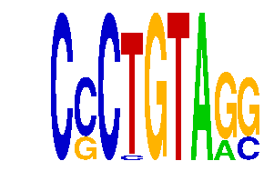

family_8 |
|---|
|  |
| Download PWM |
| Download instances (motifs) |
| Show motif distribution |
Query_ID | Query_Consensus | Subject_Name | Source_DB | Subject_ID | Length | Orientation | Offset | Divergence | Overlap | Subject_Consensus |
|---|
Sequence | Start_position (from start) | Start_position (from end) | Average conservation | Best conservation score | Instance_with_best_CS | Best_Z-score | Instance_with_best_ZS | Strand |
|---|---|---|---|---|---|---|---|---|
| chr8:86099626-86100626 | 28 | 37 | 0.00711111 | 0.02 | CCCYGTAGS | 14.065301 | CSCTGTAGS | 1 |
| chr15:98813591-98814591 | 990 | 999 | 0.153889 | 0.189 | CSCTGTARG | 15.913906 | CSCTGTARG | 1 |
| chr13:114670382-114671382 | 13 | 22 | 1 | 1 | CCCTGTARS | 12.710033 | CCCTGTARS | -1 |
| chr1:174420056-174421056 | 975 | 984 | 0.000555556 | 0.003 | CCCYGTAGS | 15.913906 | CSCTGTARG | 1 |
| chr1:10029535-10030535 | 499 | 508 | 0.000222222 | 0.001 | CSCTGTAGS | 14.065301 | CSCTGTAGS | 1 |
| chr16:90222271-90223271 | 580 | 589 | 0.0382222 | 0.049 | CCCTGTARS | 14.065301 | CSCTGTAGS | 1 |
| chr7:4466899-4467899 | 853 | 862 | 0.000888889 | 0.004 | CCCYGTAGS | 15.913906 | CSCTGTARG | 1 |
| chr4:134842576-134843576 | 793 | 802 | 0.0314444 | 0.144 | CCCYGTAGS | 15.913906 | CSCTGTARG | 1 |
| chrX:20193686-20194686 | 992 | 1001 | 0.341667 | 0.798 | CSCTGTARG | 12.710033 | CCCYGTAGS | 1 |
| chr8:73986941-73987941 | 601 | 610 | 0.864333 | 0.98 | CCCTGTARS | 15.913906 | CSCTGTARG | 1 |
| chr4:134822693-134823693 | 611 | 620 | 0.0115556 | 0.043 | CSCTGTARG | 14.065301 | CSCTGTAGS | 1 |
| chr4:134730734-134731734 | 613 | 622 | 1 | 1 | CSCTGTARG | 14.065301 | CSCTGTAGS | -1 |
| chr14:73814881-73815881 | 50 | 59 | 0.00333333 | 0.009 | CSCTGTARG | 12.710033 | CCCTGTARS | -1 |
| chr7:19996118-19997118 | 279 | 288 | 0.0122222 | 0.049 | CCCYGTAGS | 15.913906 | CSCTGTARG | 1 |
| chr3:10205625-10206625 | 497 | 506 | 0.312333 | 1 | CCCYGTAGS | 15.913906 | CSCTGTARG | -1 |
| chr4:134722044-134723044 | 620 | 629 | 0.0334444 | 0.105 | CCCYGTAGS | 12.710033 | CCCTGTARS | -1 |
| chr15:85127982-85128982 | 56 | 65 | 0.000333333 | 0.002 | CCCYGTAGS | 12.710033 | CCCYGTAGS | 1 |
| chr14:66588950-66589950 | 91 | 100 | 0.00144444 | 0.005 | CSCTGTAGS | 12.710033 | CCCTGTARS | 1 |
| chr4:107518583-107519583 | 186 | 195 | 0.0142222 | 0.062 | CCCTGTARS | 12.710033 | CCCYGTAGS | 1 |